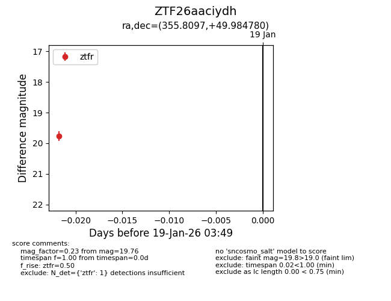
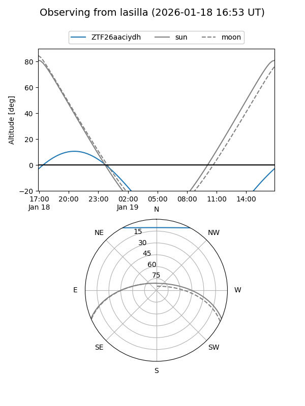
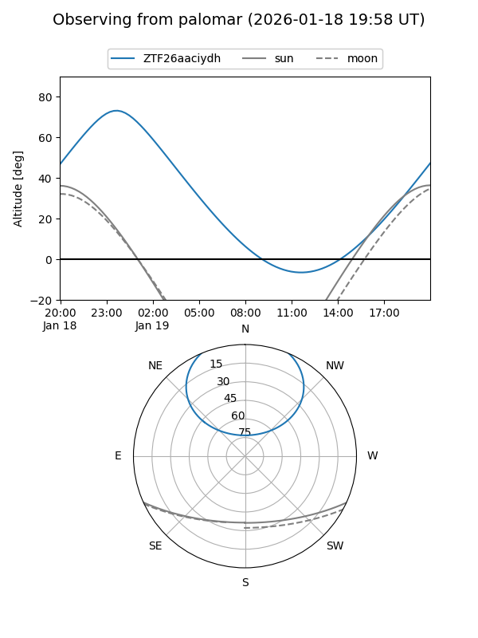

ZTF26aaciydh
Target ZTF26aaciydh at 2026-01-19 03:50
Aliases and brokers:
FINK: link
Lasair: link
ALeRCE: link
alt names
ZTF26aaciydh (ztf,fink_ztf)
Coordinates:
equatorial (ra, dec) = 355.8097,+49.98478
equatorial (HMS+DMS) = 23:43:14.33,+49:59:05.21
galactic (l, b) = (111.8432,-11.41290)
Flags:
Photometry:
last ztfr=19.76
1 ztfr detections
Lightcurve

Visibility


Additional plots